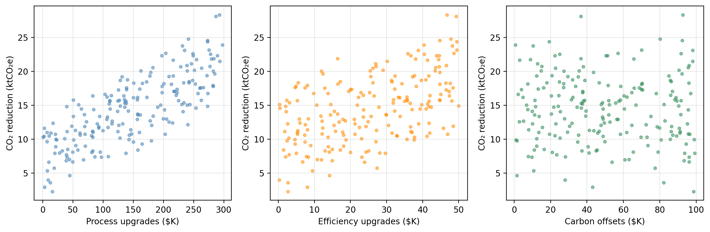
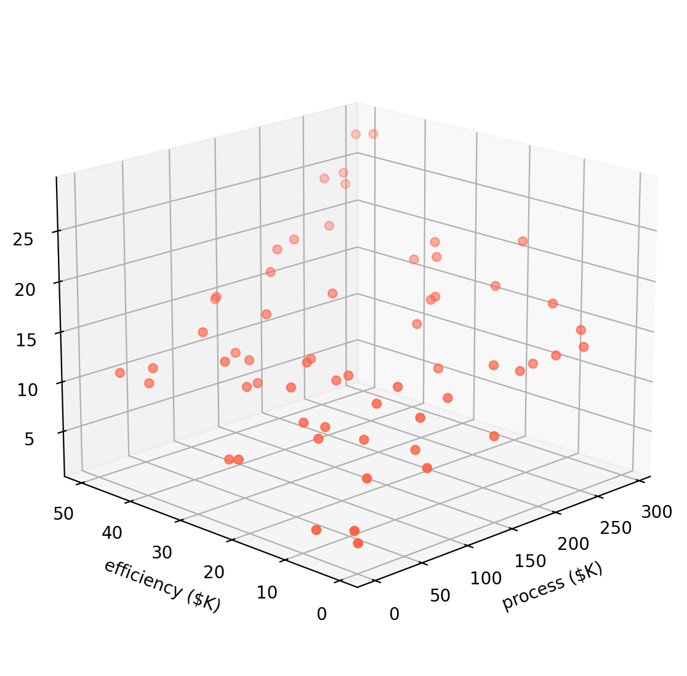
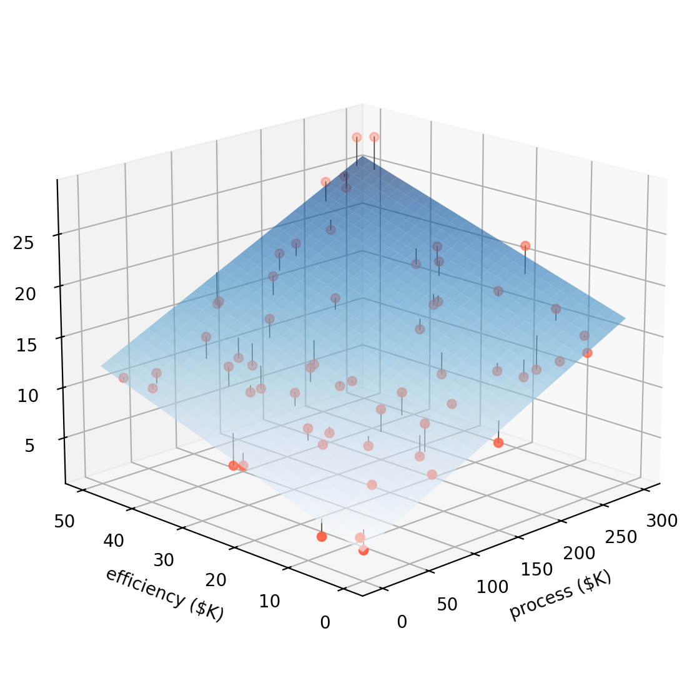

process— investment in cleaner production processes ($K/year)efficiency— investment in energy efficiency upgrades ($K/year)offsets— carbon offset purchases ($K/year)co2_reduction— annual CO₂ emissions reduced (ktCO₂e/year)

This wesbite is under construction.
EDS 232
Lesson 4
Multiple linear regression
In this lesson
A guiding example
Our example dataset
A research consortium tracks 200 manufacturing firms. For each firm, they record annual spending on three emissions-reduction strategies and the resulting CO₂ savings:
process — investment in cleaner production processes ($K/year)efficiency — investment in energy efficiency upgrades ($K/year)offsets — carbon offset purchases ($K/year)co2_reduction — annual CO₂ emissions reduced (ktCO₂e/year)The researchers want to understand:
Do these investments actually drive emissions reductions, and if so, by how much?
CO₂ reduction vs. each predictor

Synthetic data generated for educational purposes only
From SLR to MLR
In SLR we modelled the relationship between one predictor and a response:
\[\texttt{co2_reduction} \approx \hat{\beta}_0 + \hat{\beta}_1 \cdot \texttt{process}.\]
Our example dataset has three potential predictors.
Running separate SLRs has the problem that each SLR ignores the other predictors.
Multiple linear regression handles all predictors simultaneously.
The multiple linear regression model
The MLR model
✏️
The MLR model
With \(p\) predictors \(X_1, \ldots, X_p\) and response variable \(Y\), the multiple linear regression (MLR) model assumes the predictors and response are related by:
\[Y = \beta_0 + \beta_1 X_1 + \beta_2 X_2 + \cdots + \beta_p X_p + \epsilon,\]
each \(\beta_i\) is a coefficient and \(\epsilon\) is an error term.
In our example data
co2_reduction is the response variableprocess is predictor 1efficiency is predictor 2offset is predictor 3So the MLR model takes the form:
\[\texttt{co2_reduction} = \beta_0 + \beta_1 \cdot \texttt{process} + \beta_2 \cdot \texttt{efficiency} + \beta_3 \cdot \texttt{offsets} + \epsilon.\]
Estimating the MLR coefficients
✏️
Estimating the MLR coefficients
In the MLR model we assume: \(Y = \beta_0 + \beta_1 X_1 + \beta_2 X_2 + \cdots + \beta_p X_p + \epsilon.\)
Our goal is to estimate the coefficients and obtain a model
\[\hat{Y} = \hat{\beta}_0 + \hat{\beta}_1 X_1 + \hat{\beta}_2 X_2 + \cdots + \hat{\beta}_p X_p.\]
Our training set is \(\{(x_1, y_1), \ldots, (x_n, y_n)\}\) with \(n\) observations.
For each of the observations \((x_i, y_i)\) we have that:
We estimate the coefficients/fit the model by finding the \(\hat{\beta}_i\) that minimize the residual sum of squares (same procedure as SLR!):
\[ RSS = \sum_{i=1}^{n} (y_i - \hat{y}_i)^2 = \sum_{i=1}^{n} (y_i - \hat{\beta}_0 - \hat{\beta}_1x_{i1} - \ldots - \hat{\beta}_px_{ip})^2 . \]
From a line to a plane

From a line to a plane

Interpreting the MLR coefficients
Once we find the coefficients that minimize the RSS we obtain a model:
\[\hat{Y} = \hat{\beta}_0 + \hat{\beta}_1 X_1 + \hat{\beta}_2 X_2 + \cdots + \hat{\beta}_p X_p\]
We interpret each coefficient as
Check-in
For our example data, the estimated coefficients are:
MLR coeff
intercept 3.4543
process 0.0461
efficiency 0.1831
offsets -0.0088And we obtain the model: \[\text{co2_reduction} = 3.4543 + 0.0461*\text{process} + 0.1831*\text{efficiency} -0.0088*\text{offsets}\]
efficiency coefficient of 0.1831?offsets coefficient is very small and negative. What does that mean?Check-in
For our example data, the estimated coefficients are:
MLR coeff
intercept 3.4543
process 0.0461
efficiency 0.1831
offsets -0.0088And we obtain the model: \[\text{co2_reduction} = 3.4543 + 0.0461*\text{process} + 0.1831*\text{efficiency} -0.0088*\text{offsets}\]
efficiency coefficient of 0.1831?offsets coefficient is very small and negative. What does that mean?Each additional $1K in energy efficiency upgrades is associated with 0.1831 ktCO₂e of additional CO₂ reduction, holding process and offset spending constant.
Using our model, the estimate is given by \(\hat{y} = \hat{\beta}_0 + \hat{\beta}_1 \cdot 100 + \hat{\beta}_2 \cdot 20 + \hat{\beta}_3 \cdot 50 \approx 11.29\) ktCO₂e.
It means if we hold process and efficiency spending constant, higher offset purchases are associated with a slightly lower CO₂ reduction.
\(p\)-values for the coefficients
In SLR, the \(p\)-value for \(\hat{\beta}_1\) tests \(H_0: \beta_1 = 0\), which means is \(X\) related to \(Y\)?
. . .
In MLR, the \(p\)-value for each \(\hat{\beta}_j\) tests \(H_0: \beta_i =0\), which means is \(X_i\) related to \(Y\) if all other predictor are in the model?
So \(H_0\) for MLR is about the partial effect of \(X_j\). We are trying to answer:
Does \(X_j\) add information beyond what the other predictors already explain?
. . .
We can interpret the individual \(p\)-values from the MLR as
Check-in
For our example data we obtaing the following estimates and \(p\)-values for the coefficients associated with the predictors
Predictor MLR coeff MLR p-value
process 0.0461 < 0.0001
efficiency 0.1831 < 0.0001
offsets -0.0088 0.0193How can we interpret the \(p\)-value associated with the process variable?
The offsets variable has a large \(p\)-value of 0.0193. What does it tell us in the context of this MLR model?
Check-in
For our example data we obtaing the following estimates and \(p\)-values for the coefficients associated with the predictors
Predictor MLR coeff MLR p-value
process 0.0461 < 0.0001
efficiency 0.1831 < 0.0001
offsets -0.0088 0.0193How can we interpret the \(p\)-value associated with the process variable?
The offsets variable has a large \(p\)-value of 0.0193. What does it tell us in the context of this MLR model?
There is a relationship between the process predictor and the response variable co2_reduction, when the efficiency and offsets remain fixed.
It is detecting that offset spending contributes almost nothing beyond what process and efficiency already capture.
Comparing MLR to individual SLRs
SLR vs. MLR: why not just run \(p\) separate regressions?
. . .
Example
Suppose firms that invest heavily in process upgrades tend to also invest heavily in efficiency.
co2_reduction on process alone will give a coefficient that also reflects some of the efficiency effect.process strips out the efficiency effect and reflects only the direct relationship of process.SLR vs. MLR: why not just run \(p\) separate regressions?
Example
In our example dataset, SLR ≈ MLR coefficients because the predictors were drawn independently (uncorrelated by construction).
Predictor SLR coeff SLR p-value MLR coeff MLR p-value
process 0.0460 < 0.0001 0.0461 < 0.0001
efficiency 0.1793 < 0.0001 0.1831 < 0.0001
offsets -0.0060 0.6153 -0.0088 0.0193Hypothesis testing & the F-statistic
Is any predictor related to the response?
In SLR: \(Y \approx \beta_0 + \beta_1 X\) and we tested
Is any predictor related to the response?
In SLR: \(Y \approx \beta_0 + \beta_1 X\) and we tested
For MLR: \(Y \approx \beta_0 + \beta_1X_1 + \ldots + \beta_p X_p\) and we can test
We are investigating the question Is any predictor related to the response?
The F-statistic
We are investigating the question Is any predictor related to the response?
We test this with the \(F\)-statistic:
\[F = \frac{(TSS - RSS)/p}{RSS/(n - p - 1)}\]
The F-statistic
We are investigating the question Is any predictor related to the response?
We test this with the \(F\)-statistic:
\[F = \frac{(TSS - RSS)/p}{RSS/(n - p - 1)}\]
An associated \(p\)-value is then computed to assess the probability of observing an \(F\)-statistic this large or larger, assuming \(H_0\) is true.
Example
Quantity Value
F-statistic 612.13
p-value < 0.0001An \(F\)-statistic of 612.1 with \(p \ll 0.05\) gives very strong evidence that at least one predictor is associated with CO₂ reductions.
. . .
Check-in
Pair up with someone.
Have one person explain the hypothesis test for simple linear regression and the other explain the hypothesis test for multiple linear regression.
Hypothesis testing steps
From EDS 222.
Identify the TEST STATISTIC
State your NULL and ALTERNATIVE hypotheses
Calculate the OBSERVED test statistic
Estimate the NULL DISTRIBUTION
Calculate P-VALUE
Compare p-value to CRITICAL THRESHOLD
Why not just use individual p-values?
Earlier we saw that each coefficient of the MLR has an associated \(p\)-value. So one my ask: why do we need a \(p\)-value for the \(F\)-statistic, when we can just interpet each \(p\)-value individually?
. . .
For an individual coefficient, a \(p\)-value of 0.05 means:
“if there is truly no relationship (\(H_0\) true), there is a 5% probability of getting a \(t\)-statistic this extreme just by random chance.”
Suppose \(p=100\) and there’s truly no association between any predictor and the response. We would expect about 5% of our \(t\)-statistics to be “false positives” just by random chance.
. . .
When \(p\) is large, we run the risk of some individual \(p\)-values being small by chance even when no predictor is truly related to \(Y\).
The \(F\)-statistic tests all coefficients jointly and accounts for this.
Model fit: R² and adjusted R²
\(R^2\) in multiple regression
The \(R^2\) formula is the same as in SLR:
\[R^2 = 1 - \frac{RSS}{TSS}\]
It measures the proportion of variance in \(Y\) explained by the model.
Important: adding a predictor to an MLR model will increase \(R^2\) or leave it unchanged, even if that predictor has no real relationship with \(Y\).
. . .
The adjusted \(R^2\) penalizes for the number of predictors:
\[\bar{R}^2 = 1 - \frac{RSS/(n-p-1)}{TSS/(n-1)}\]
Adjusted \(R^2\) can decrease when an irrelevant predictor is added. Better for comparing models of different sizes.
Check-in
Model R² Adj. R²
SLR (process only) 0.611 0.609
MLR (all three predictors) 0.904 0.902. . .
Probably, but remember \(R^2\) always increases (or stays flat) when predictors are added, even useless ones. It cannot be used alone to compare models of different sizes.
Adjusted \(R^2\) penalizes for each extra predictor. The fact that it also increased means efficiency (and possibly offsets) are contributing enough to justify their inclusion.
Variable selection
Which predictors should we include?
With \(p\) predictors there are \(2^p\) possible ways of choosing which predictors to use:
. . .
Three common automated approaches for large \(p\):
Forward and backward selection
Forward selection
✓ Always applicable
✗ A variable added early may become redundant later
Forward and backward selection
Forward selection
✓ Always applicable
✗ A variable added early may become redundant later
Backward selection
✓ Considers all predictors from the start
✗ Cannot be used when \(p > n\)
Can be run using other metrics instead of RSS or \(p\)-values.
Check-in
Predictors RSS
(intercept only) 5016.8
process 1950.3
efficiency 3601.4
offsets 5010.4
process + efficiency 497.5
process + offsets 1949.8
efficiency + offsets 3571.4
process + efficiency + offsets 483.8Forward selection process
Trace through forward selection using this table.
Which predictor would be added first? Second? Does adding offsets meaningfully reduce RSS?
What criteria could be used to decide whether to add or not the final predictor?
Check-in
Predictors RSS
(intercept only) 5016.8
process 1950.3
efficiency 3601.4
offsets 5010.4
process + efficiency 497.5
process + offsets 1949.8
efficiency + offsets 3571.4
process + efficiency + offsets 483.8Forward selection process
Trace through forward selection using this table.
Which predictor would be added first? Second? Does adding offsets meaningfully reduce RSS?
What criteria could be used to decide whether to add or not the final predictor?
process is added 1st (lowest RSS)efficiency is added 2nd: Substantial RSS reduction, efficiency spending is genuinely associated with CO₂ reductions.offsets to the two-predictor model produces only a very small reduction in RSSCheck-in
Step 1 — full model
Predictor p-value
process < 0.0001
efficiency < 0.0001
offsets 0.0193Step 2 — after first removal
Predictor p-value
process < 0.0001
efficiency < 0.0001Backward selection
Using the \(p\)-value tables, trace through backward selection step by step.
Check-in
Step 1 — full model
Predictor p-value
process < 0.0001
efficiency < 0.0001
offsets 0.0193Step 2 — after first removal
Predictor p-value
process < 0.0001
efficiency < 0.0001Backward selection
offsets has by far the largest \(p\)-value → remove itprocess and efficiency have very small \(p\)-values → all remaining predictors are significant; stopMixed selection
Mixed selection (stepwise) combines forward and backward steps:
This fixes the main weakness of forward selection: a variable added early can be removed once other, better variables are in the model.
Variable selection: in practice
Use forward when:
Use backward when:
In practice:
Modern practice often prefers regularization (lasso, ridge) over stepwise selection — these methods perform variable selection and coefficient estimation simultaneously and have better statistical properties. More on this later in the course.
In this lesson we covered